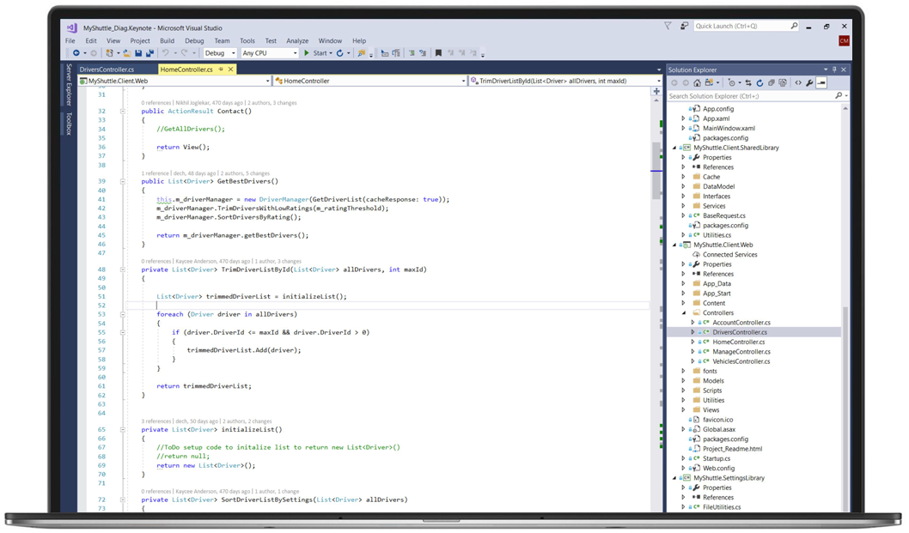

Visual Studio 使你能够准确、高效地编写代码，并且不会丢失当前的文件上下文。 你可以 轻松地放大到详细信息，例如调用结构、相关函数、签入和测试状态。 还可以利用我们的 功能来重构、识别和修复代码问题。 了解更多
使用 Visual Studio 调试程序，通过代码的历史数据可跨语言快速查找并修复 bug，无论是 在本地还是远程。 利用分析工具发现并诊断性能问题，无需离开调试工作流。 了解更多

Visual Studio 测试工具帮助你交付高质量的软件。 使用这些工具规划、执行和监视你的全 部测试工作。 通过质量指标、指标和全面的测试状态报告来掌握你的测试规划。 了解更多

通过利用 Microsoft、合作伙伴和社区提供的工具、控件和模板，扩展 Visual Studio 功能。 通过构建你自己的扩展来根据你的喜好进行进一步操作和自定义。 了解更多

你想要构建什么？
Free, fully-featured IDE for students, open-source and individual developers
Professional developer tools, services, and subscription benefits for small teams
End-to-end solution to meet demanding quality and scale needs of teams of all sizes